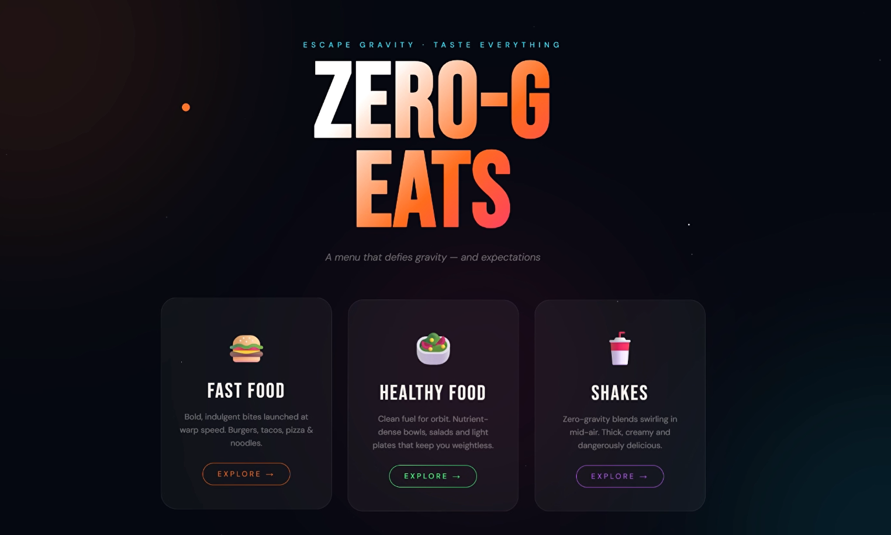

Frontend

Zero-G Eats — Food Menu Website
A visually immersive, space-themed restaurant menu site built entirely in vanilla HTML, CSS, and JavaScript — no frameworks. Three category cards (Fast Food, Healthy Food, Shakes) float on the homepage with a continuous drifting animation; picking one opens a menu where dish cards drift and bob against an animated star field and shifting ambient light blobs.
Built with a custom cursor, scroll-triggered reveal animations, expandable ingredient panels with smooth CSS transitions, and a sticky tab-switching nav — all as a single page, no reloads.